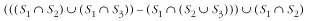
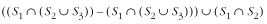
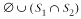
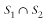

7.5 Questions and Answers
Q: Instead of implementing set_is_subset as shown, how could we
use other set operations to determine if one set, S1, is a subset of another set, S2? Why is set_is_subset provided?
A: In set
notation, if S1 S2 = S1, then S1 S2. Therefore, we could
use a combination of the set_intersection and set_is_equal operations. Whether we
implement this operation as shown or use set_intersection and set_is_equal, its runtime complexity
is O (mn), where m is the size of S1 and n is the size of S2. However, in the case
of calling set_intersection and
set_is_equal, the running time
is actually closer to T (m, n)
= 2mn because both set_intersection and set_is_equal run in T (m, n)
= mn times some constant.
Compare this with the operation set_is_subset, which runs closer to
T (m, n)
= mn. Although the complexities
of the two methods are the same, calling set_intersection and set_is_equal requires approximately
double the time in practice.
Q: Instead of
implementing set_is_equal as
shown, how could we use other set operations to determine if
one set, S1, is equal to
another set, S2?
A: In set
notation, if S1 -
S2 = and S2 - S1 = , then S1 = S2. Therefore, we could
implement this, albeit less efficiently, using two calls to
set_difference and two calls to
set_size.
Q: Instead of
implementing set_intersection
as shown,
how could we use the set_difference operation to compute
the intersection of two sets, S1 and S2?
A: In set
notation, S1 S2 = S1 - (S1 - S2). Therefore, we could
implement this, albeit less efficiently, using two calls to
set_difference.
Q: Why was list_ins_next used instead of set_insert to insert members into the
sets built within set_union,
set_intersection, and set_difference?
A: Recall that
the running time of set_insert
is O (n) because it traverses a set to
ensure that the member being inserted is not duplicated. Since
the set_union, set_intersection, and set_difference operations ensure this
already, it is considerably more efficient to call the O (1) operation list_ins_next instead.
Q: Suppose we
have three sets, S1 = {1, 2, 3
}, S2 = {1, 4, 5}, and
S3 = {1}. What is the result of the set
operations S1 S2 , S1 - (S2 S3) , and (S1 S2) - S3?
A: S1 S2 = {1, 2, 3, 4, 5},
S1 - (S2 S3) = {2, 3}, and (S1 S2) - S3 = .
Q: Using the
properties and basic operations presented for sets, simplify
(((S1 S2) (S1 S3)) - (S1 (S2 S3))) (S1 S2).

Applying the distributive law produces:

Applying set difference produces:

Applying the empty set law produces:

Q: The symmetric difference of two sets consists of those members
that are in either of the two sets, but not both. The notation
for the symmetric difference of two sets, S1 and S2, is S1 D S2. How could we implement a
symmetric difference operation using the set operations
presented in this chapter? Could this operation be implemented
more efficiently some other way?
A: In set
notation, S1 D S2 = (S1 - S2) (S2 - S1). Therefore, we could
implement this operation using two calls to set_difference followed by a call to
set_union. This produces a
worst-case running time of T
(m, n) = 3mn times some constant, for a
complexity of O (mn), where m is the size of S1 and n is the size of S2. For example, consider
the sets S1 = {1, 2,
3} and S2 = {4, 5,
6}, which represent a worst-case scenario. To compute S1 - S2, we must search all of
S2 for each member
in S1, which results
in the set {1, 2, 3}. Similarly, to compute S2 - S1, we must search all of
S1 for each member
of S2, which results
in the set {4, 5, 6}. Since both sets are the same size as the
original sets, sizes m and
n, their union is another
operation that runs in time proportionate to m times n. However, since we know that the
sets produced by S1
- S2 and S2 - S1 will not generate any
duplicate members between them, we could avoid the use of
set_union and simply insert
each member into the final set by calling the O (1) operation list_ins_next once for each member
m + n times. This is a better
implementation in practice, but it does not change the overall
complexity.
Q: A multiset (see the related topics at
the end of the chapter) is a type of set that allows members to
occur more than once. How would the runtime complexities of
inserting and removing members with a multiset compare with
the operations for inserting and removing members in this
chapter?
A: When inserting a member into a set, in
which members may not be duplicated, we must search the entire
set to ensure that we do not duplicate a member. This is an
O (n) process. Removing a member from a
set is O (n) as well because we may have to
search the entire set again. In a multiset, inserting a member
is considerably more efficient because we do not have to
traverse the members looking for duplicates. Therefore, we can
insert the new member in O (1)
time. In a multiset, removing a member remains an O (n)
process because we still must search for the member we want to
remove.
|